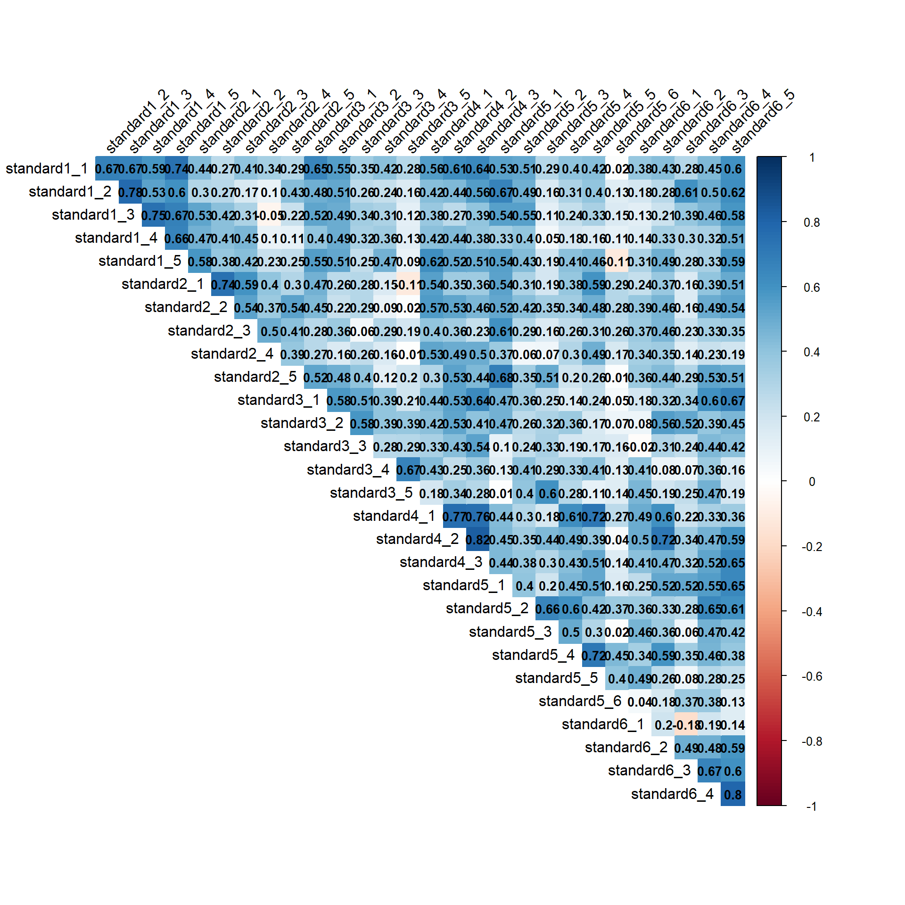
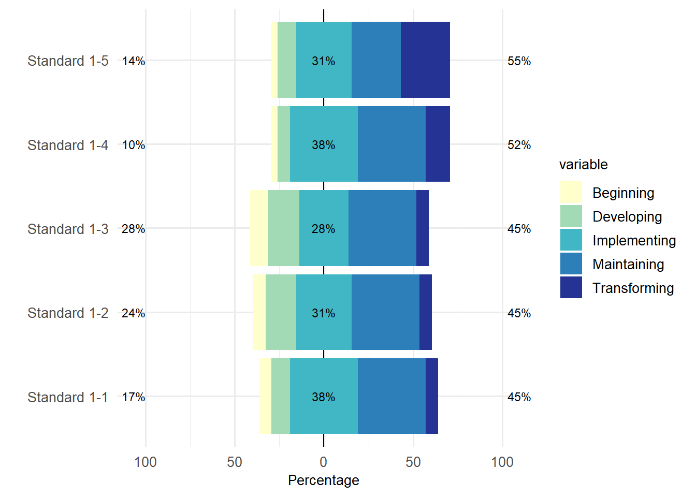
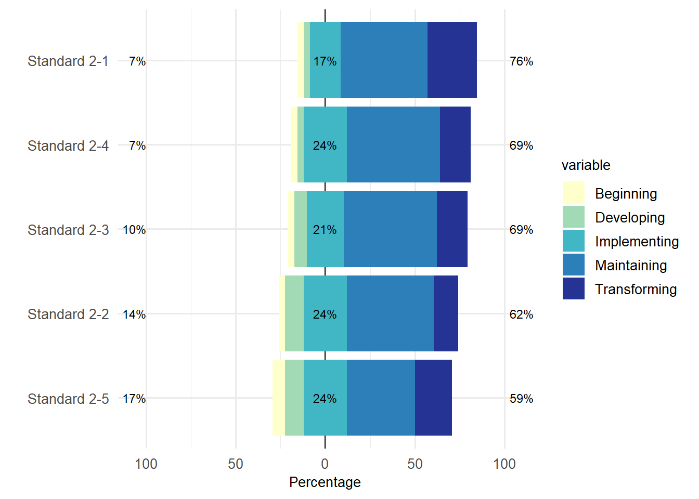
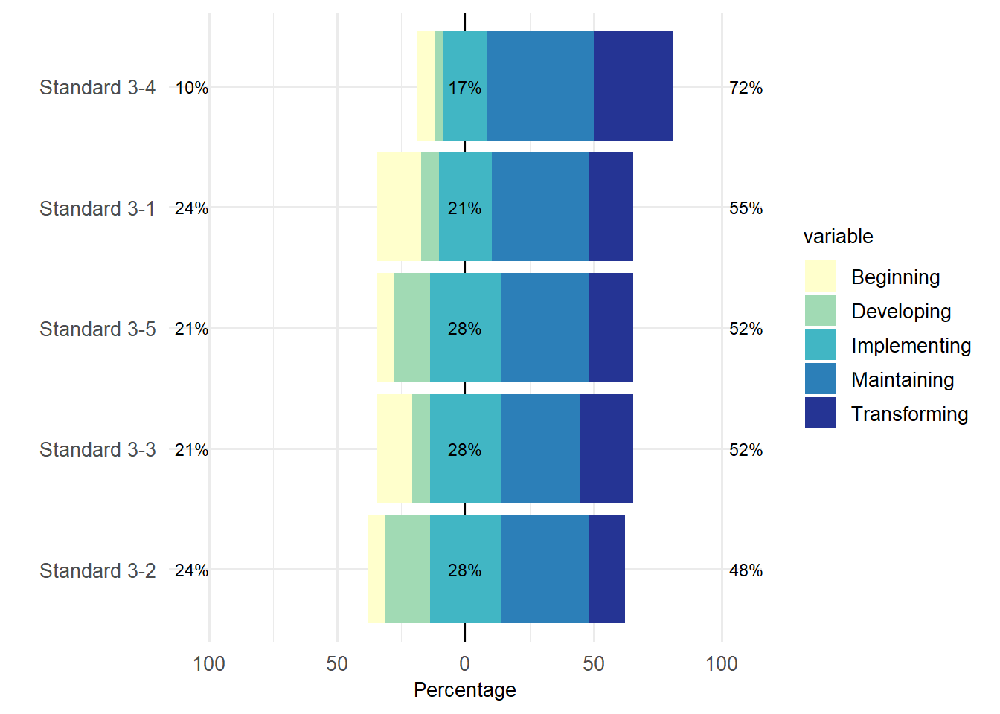
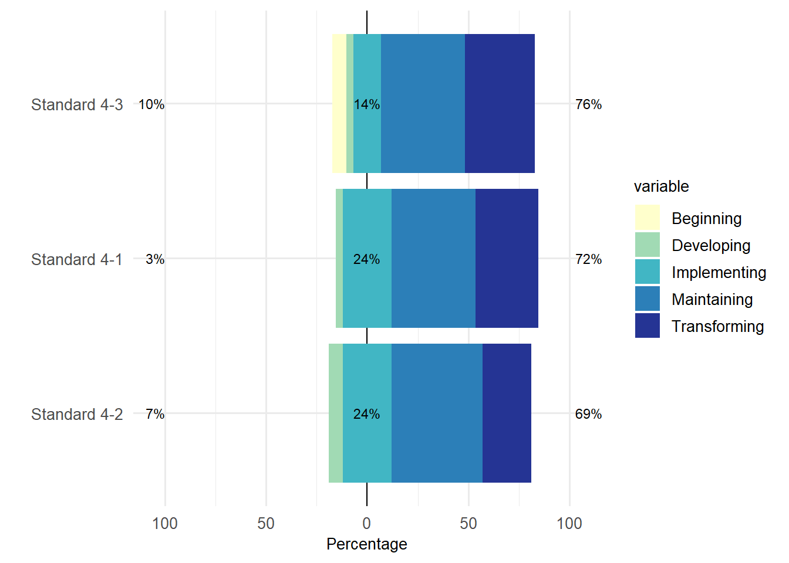

suppressPackageStartupMessages({
library(readxl)
library(officer)
library(likert)
library(gtsummary)
library(flextable)
library(ggplot2)
library(tidyr)
library(dplyr)
library(reshape2)
library(psych)
library(corrplot)
})
data <- read_excel("data/data.xlsx")demo_tbl <- data %>%
dplyr::select(teaching_years, gender, age, program) %>%
tbl_summary(
percent = "column")
demo_tbl_ft <- as_flex_table(demo_tbl)
docx <- read_docx()
docx <- body_add_flextable(docx, demo_tbl_ft)
print(docx, target = "results/demo_tbl.docx")Code
demo_tbl_ft Characteristic | N = 291 |
|---|---|
teaching_years | |
0-5 years | 8 (28%) |
10-20 years | 4 (14%) |
20-30 years | 7 (24%) |
5-10 years | 6 (21%) |
Over 30 years | 4 (14%) |
gender | |
Female | 20 (69%) |
Male | 9 (31%) |
age | |
21-40 | 3 (10%) |
41-60 | 13 (45%) |
51-70 | 13 (45%) |
program | |
Alternative Certification (PACE) | 6 (21%) |
Both equally | 4 (14%) |
Traditional | 19 (66%) |
1n (%) | |
Calculate Cronbach’s alpha
calculate_alpha <- function(data, prefix) {
category_cols <- grep(paste0("^", prefix), colnames(data), value = TRUE)
alpha_result <- alpha(data[, category_cols])
cat(paste("Cronbach's alpha for", prefix, ":", format(alpha_result$total$raw_alpha, digits = 2, nsmall = 2)), "\n")
return(alpha_result)
}
alpha_standard1 <- calculate_alpha(data, "standard1")Cronbach's alpha for standard1 : 0.93 alpha_standard2 <- calculate_alpha(data, "standard2")Cronbach's alpha for standard2 : 0.88 alpha_standard3 <- calculate_alpha(data, "standard3")Cronbach's alpha for standard3 : 0.84 alpha_standard4 <- calculate_alpha(data, "standard4")Cronbach's alpha for standard4 : 0.89 alpha_standard5 <- calculate_alpha(data, "standard5")Cronbach's alpha for standard5 : 0.81 alpha_standard6 <- calculate_alpha(data, "standard6")Cronbach's alpha for standard6 : 0.79 Spearman’s Correlation
Code
cor_data <- data %>% select(standard1_1:standard6_5)
cor_matrix <- cor(cor_data, method = "spearman", use = "complete.obs")
corrplot(cor_matrix, method = "color", type = "upper",
tl.col = "black", tl.srt = 45,
tl.cex = 1,
addCoef.col = "black", number.cex = 0.85,
diag = FALSE)
Code
cor_summary <- function(cor_matrix) {
cor_values <- cor_matrix[upper.tri(cor_matrix)]
summary <- list(
mean = round(mean(cor_values), 2),
median = round(median(cor_values), 2),
sd = round(sd(cor_values), 2),
min = round(min(cor_values), 2),
max = round(max(cor_values), 2)
)
return(summary)
}
cor_summary <- cor_summary(cor_matrix)
cor_summary$mean
[1] 0.37
$median
[1] 0.38
$sd
[1] 0.18
$min
[1] -0.18
$max
[1] 0.82Code
selected_data <- data %>% select(id:program, standard1_1:standard6_5)
init_long_data <- melt(selected_data, id.vars = c('id', 'teaching_years', 'gender', 'age', 'program'), variable.name = 'standard', value.name = 'response')
openxlsx::write.xlsx(init_long_data, "data/init_long_data.xlsx", asTable = TRUE)
init_long_data <- init_long_data %>% mutate(response = case_when(
response == "1" ~ "Beginning",
response == "2" ~ "Developing",
response == "3" ~ "Implementing",
response == "4" ~ "Maintaining",
response == "5" ~ "Transforming"
))
wide_data <- init_long_data %>%
spread(key = standard, value = response)
selected_df <- wide_data %>% select(standard1_1:standard6_5) %>% mutate(across(everything(), as.factor))
levels <- function(df) {
all_levels <- c("Beginning", "Developing", "Implementing", "Maintaining", "Transforming")
for (col in colnames(df)) {
df[[col]] <- factor(df[[col]], levels = all_levels, ordered = TRUE)
}
return(df)
}
selected_df <- levels(selected_df)
selected_df <- selected_df %>% rename(
"Standard 1-1" = standard1_1,
"Standard 1-2" = standard1_2,
"Standard 1-3" = standard1_3,
"Standard 1-4" = standard1_4,
"Standard 1-5" = standard1_5,
"Standard 2-1" = standard2_1,
"Standard 2-2" = standard2_2,
"Standard 2-3" = standard2_3,
"Standard 2-4" = standard2_4,
"Standard 2-5" = standard2_5,
"Standard 3-1" = standard3_1,
"Standard 3-2" = standard3_2,
"Standard 3-3" = standard3_3,
"Standard 3-4" = standard3_4,
"Standard 3-5" = standard3_5,
"Standard 4-1" = standard4_1,
"Standard 4-2" = standard4_2,
"Standard 4-3" = standard4_3,
"Standard 5-1" = standard5_1,
"Standard 5-2" = standard5_2,
"Standard 5-3" = standard5_3,
"Standard 5-4" = standard5_4,
"Standard 5-5" = standard5_5,
"Standard 5-6" = standard5_6,
"Standard 6-1" = standard6_1,
"Standard 6-2" = standard6_2,
"Standard 6-3" = standard6_3,
"Standard 6-4" = standard6_4,
"Standard 6-5" = standard6_5
)Teacher Education Standard 1
Code
S1 <- likert(selected_df[,c(1:5)])
plot(S1, legend.position="right") + theme_minimal(base_size = 14) +
theme(
axis.text.x = element_text(size = 10),
axis.text.y = element_text(size = 10),
axis.title.x = element_text(size = 10),
axis.title.y = element_text(size = 10),
legend.title = element_text(size = 10),
legend.text = element_text(size = 10)
) +
scale_fill_brewer(palette = "YlGnBu", breaks = c("Beginning", "Developing", "Implementing", "Maintaining", "Transforming"))Scale for fill is already present.
Adding another scale for fill, which will replace the existing scale.
Code
ggsave("results/standard1.png", height = 3, width = 7)Teacher Education Standard 2
Code
S2 <- likert(selected_df[,c(6:10)])
plot(S2, legend.position="right") + theme_minimal(base_size = 14) +
theme(
axis.text.x = element_text(size = 10),
axis.text.y = element_text(size = 10),
axis.title.x = element_text(size = 10),
axis.title.y = element_text(size = 10),
legend.title = element_text(size = 10),
legend.text = element_text(size = 10)
) +
scale_fill_brewer(palette = "YlGnBu", breaks = c("Beginning", "Developing", "Implementing", "Maintaining", "Transforming"))Scale for fill is already present.
Adding another scale for fill, which will replace the existing scale.
Code
ggsave("results/standard2.png", height = 3, width = 7)Teacher Education Standard 3
Code
S3 <- likert(selected_df[,c(11:15)])
plot(S3, legend.position="right") + theme_minimal(base_size = 14) +
theme(
axis.text.x = element_text(size = 10),
axis.text.y = element_text(size = 10),
axis.title.x = element_text(size = 10),
axis.title.y = element_text(size = 10),
legend.title = element_text(size = 10),
legend.text = element_text(size = 10)
) +
scale_fill_brewer(palette = "YlGnBu", breaks = c("Beginning", "Developing", "Implementing", "Maintaining", "Transforming"))Scale for fill is already present.
Adding another scale for fill, which will replace the existing scale.
Code
ggsave("results/standard3.png", height = 3, width = 7)Teacher Education Standard 4
Code
S4 <- likert(selected_df[,c(16:18)])
plot(S4, legend.position="right") + theme_minimal(base_size = 14) +
theme(
axis.text.x = element_text(size = 10),
axis.text.y = element_text(size = 10),
axis.title.x = element_text(size = 10),
axis.title.y = element_text(size = 10),
legend.title = element_text(size = 10),
legend.text = element_text(size = 10)
) +
scale_fill_brewer(palette = "YlGnBu", breaks = c("Beginning", "Developing", "Implementing", "Maintaining", "Transforming"))Scale for fill is already present.
Adding another scale for fill, which will replace the existing scale.
Code
ggsave("results/standard4.png", height = 3, width = 7)Teacher Education Standard 5
Code
S5 <- likert(selected_df[,c(19:24)])
plot(S5, legend.position="right") + theme_minimal(base_size = 14) +
theme(
axis.text.x = element_text(size = 10),
axis.text.y = element_text(size = 10),
axis.title.x = element_text(size = 10),
axis.title.y = element_text(size = 10),
legend.title = element_text(size = 10),
legend.text = element_text(size = 10)
) +
scale_fill_brewer(palette = "YlGnBu", breaks = c("Beginning", "Developing", "Implementing", "Maintaining", "Transforming"))Scale for fill is already present.
Adding another scale for fill, which will replace the existing scale.
Code
ggsave("results/standard5.png", height = 3, width = 7)Teacher Education Standard 6
Code
S6 <- likert(selected_df[,c(25:29)])
plot(S6, legend.position="right") + theme_minimal(base_size = 14) +
theme(
axis.text.x = element_text(size = 10),
axis.text.y = element_text(size = 10),
axis.title.x = element_text(size = 10),
axis.title.y = element_text(size = 10),
legend.title = element_text(size = 10),
legend.text = element_text(size = 10)
) +
scale_fill_brewer(palette = "YlGnBu", breaks = c("Beginning", "Developing", "Implementing", "Maintaining", "Transforming"))Scale for fill is already present.
Adding another scale for fill, which will replace the existing scale.
Code
ggsave("results/standard6.png", height = 3, width = 7)